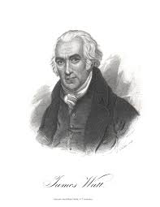
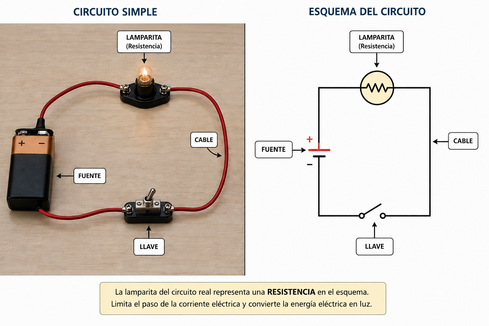

Sistemas Multi Física - Profesor Javier Pereyra
Potencia eléctrica y energía eléctrica
Apunte de estudio para integrar circuitos simples, Ley de Ohm, watts, kilowatts, kilowatt-hora y efecto Joule.

1 Idea inicial
En las clases anteriores estudiamos corriente, resistencia y tensión. Ahora vamos a mirar el circuito desde otra pregunta: ¿cuánta energía transforma por segundo?
Una lamparita, una resistencia, un cargador o un motor reciben energía eléctrica y la transforman en otras formas: luz, calor, movimiento, sonido o energía química almacenada en una batería.
Una analogía útil: no es lo mismo llenar un balde gota a gota que con una manguera potente. La energía total puede ser la misma, pero la potencia indica qué tan rápido ocurre el proceso.
2 Circuito simple: lo que ya sabemos
En un circuito simple cerrado, una fuente aporta tensión, circula corriente y el receptor presenta resistencia. Con la Ley de Ohm ya podemos relacionar esas tres magnitudes:
\(V\): tensión o diferencia de potencial.
\(I\): corriente eléctrica.
\(R\): resistencia eléctrica.

3 Potencia eléctrica
En física, la potencia se define como energía transformada por unidad de tiempo:
\(P\): potencia.
\(E\): energía transformada.
\(t\): tiempo durante el cual ocurre la transformación.
En electricidad, si conocemos la tensión aplicada y la corriente que circula, la potencia se calcula con:
Si el voltaje aumenta y la corriente se mantiene, la potencia aumenta.
Si la corriente aumenta y el voltaje se mantiene, también aumenta la potencia.
Esta relación permite estimar cuánta energía por segundo transforma un dispositivo eléctrico.
4 Watt y kilowatt
La unidad de potencia en el Sistema Internacional es el watt, cuyo símbolo es \(W\). Un watt equivale a transformar un joule de energía por segundo:
Una potencia pequeña transforma poca energía por segundo.
Una potencia grande transforma mucha energía por segundo.
Para potencias domésticas se usa mucho el kilowatt.
Unidad básica de potencia. Ejemplo: una lámpara LED puede tener \(9\,W\).
\(1\,kW=1000\,W\). Se usa para potencias mayores, como calefactores o motores.
Ayuda a recordar que la potencia habla de rapidez de transformación de energía.
5 Energía eléctrica y kilowatt-hora
La energía eléctrica consumida depende de dos cosas: la potencia del dispositivo y el tiempo durante el cual funciona.
Si \(P\) está en watts y \(t\) en segundos: la energía queda en joules.
Si \(P\) está en kilowatts y \(t\) en horas: la energía queda en kilowatt-hora.
El kilowatt-hora, escrito \(kWh\), es una unidad práctica para medir energía eléctrica en consumos domiciliarios. No es una unidad de potencia: es una unidad de energía.
Un consumo de \(1\,kWh\) significa usar una potencia de \(1\,kW\) durante \(1\,h\).
También puede ser \(0{,}5\,kW\) durante \(2\,h\), o \(2\,kW\) durante \(0{,}5\,h\).
6 Potencia, resistencia y Ley de Ohm
Como \(P=V\cdot I\) y \(V=I\cdot R\), podemos obtener otras formas útiles de calcular potencia en circuitos simples.
Estas fórmulas describen el mismo fenómeno desde datos distintos. La elección depende de qué información tenga el problema.
7 El efecto Joule
Cuando una corriente atraviesa un conductor con resistencia, parte de la energía eléctrica se transforma en energía térmica. Este fenómeno se conoce como efecto Joule.

\(P_J\): potencia térmica disipada por efecto Joule.
\(I\): corriente que circula.
\(R\): resistencia del elemento.
Si esa potencia se mantiene durante un intervalo de tiempo, la energía térmica transformada puede calcularse como:
\(E_J\): energía transformada en calor por efecto Joule.
\(t\): tiempo de funcionamiento.
Con \(P\) en watts y \(t\) en segundos, la energía queda en joules.
El efecto Joule puede ser útil, por ejemplo en una pava eléctrica, una tostadora o un secador de pelo. Pero también puede ser una pérdida no deseada, como el calentamiento de cables cuando circula demasiada corriente.
8 Sistema de unidades
| Magnitud | Símbolo | Unidad habitual | Relación importante |
|---|---|---|---|
| Potencia eléctrica | \(P\) | watt \(W\) | \(P=V\cdot I\) |
| Potencia grande | \(P\) | kilowatt \(kW\) | \(1\,kW=1000\,W\) |
| Energía | \(E\) | joule \(J\) | \(E=P\cdot t\), con \(P\) en \(W\) y \(t\) en \(s\) |
| Energía eléctrica domiciliaria | \(E\) | kilowatt-hora \(kWh\) | \(E=P\cdot t\), con \(P\) en \(kW\) y \(t\) en \(h\) |
| Tensión | \(V\) | volt \(V\) | energía por unidad de carga |
| Corriente | \(I\) | ampere \(A\) | carga por unidad de tiempo |
| Resistencia | \(R\) | ohmio \(\Omega\) | oposición al paso de la corriente |
9 Ejemplo resuelto 1: potencia de una lámpara
Problema: una lámpara funciona con una tensión de \(12\,V\) y por ella circula una corriente de \(0{,}50\,A\). ¿Qué potencia eléctrica transforma?
Datos: \(V=12\,V\), \(I=0{,}50\,A\).
Fórmula: \(P=V\cdot I\).
Reemplazo: \(P=12\,V\cdot0{,}50\,A=6\,W\).
Resultado: la potencia de la lámpara es \(6\,W\).
Interpretación: la lámpara transforma \(6\,J\) de energía eléctrica por cada segundo de funcionamiento.
10 Ejemplo resuelto 2: energía en kWh
Problema: la lámpara anterior de \(6\,W\) permanece encendida durante \(15\) minutos. ¿Cuánta energía consume en \(kWh\)?
Datos: \(P=6\,W=0{,}006\,kW\), \(t=15\,min=0{,}25\,h\).
Fórmula: \(E=P\cdot t\).
Reemplazo: \(E=0{,}006\,kW\cdot0{,}25\,h=0{,}0015\,kWh\).
Resultado: consume \(0{,}0015\,kWh\).
Interpretación: aunque la lámpara está encendida un rato, su consumo es pequeño porque su potencia también es pequeña.
11 Ejemplo resuelto 3: efecto Joule
Problema: una resistencia de \(10\,\Omega\) es atravesada por una corriente de \(2\,A\) durante \(30\,s\). ¿Qué potencia disipa por efecto Joule y qué energía térmica entrega?
Datos: \(R=10\,\Omega\), \(I=2\,A\), \(t=30\,s\).
Fórmula de potencia: \(P_J=I^2R\).
Reemplazo: \(P_J=(2\,A)^2\cdot10\,\Omega=40\,W\).
Energía: \(E=P\cdot t=40\,W\cdot30\,s=1200\,J\).
Interpretación: durante esos \(30\,s\), la resistencia transforma \(1200\,J\) de energía eléctrica en energía térmica.
12 Lectura de consumos eléctricos
Para calcular energía en \(kWh\), conviene pasar la potencia a \(kW\) y el tiempo a horas. La tabla muestra algunos ejemplos cotidianos.
| Dispositivo | Potencia | Tiempo de uso | Energía |
|---|---|---|---|
| Lámpara LED | \(10\,W=0{,}010\,kW\) | \(5\,h\) | \(0{,}050\,kWh\) |
| Ventilador | \(60\,W=0{,}060\,kW\) | \(4\,h\) | \(0{,}240\,kWh\) |
| Pava eléctrica | \(2000\,W=2{,}0\,kW\) | \(0{,}1\,h\) | \(0{,}20\,kWh\) |
13 Actividades
- Un motor funciona con \(24\,V\) y circula por él una corriente de \(3\,A\). Calcula su potencia eléctrica.
- Una lámpara de \(40\,W\) está encendida durante \(2\,h\). Calcula la energía consumida en \(Wh\) y en \(kWh\).
- Un calefactor tiene una potencia de \(1{,}5\,kW\). ¿Cuánta energía consume si funciona durante \(3\,h\)?
- Una resistencia de \(8\,\Omega\) es atravesada por una corriente de \(2\,A\). Calcula la potencia disipada por efecto Joule.
- Un dispositivo consume \(0{,}75\,kWh\) en \(3\,h\). ¿Cuál fue su potencia media en \(kW\) y en \(W\)?
- Una resistencia está conectada a \(12\,V\) y tiene \(6\,\Omega\). Usa Ley de Ohm para hallar la corriente y luego calcula la potencia.
- Completa la tabla usando \(E=P\cdot t\):
Potencia Tiempo Energía \(0{,}1\,kW\) \(5\,h\) \(2\,kW\) \(0{,}25\,h\) \(0{,}06\,kW\) \(10\,h\) - Dos lámparas consumen la misma energía total. La primera tiene mayor potencia que la segunda. ¿Cuál estuvo encendida menos tiempo? Justifica sin calcular.
- Explica por qué un cable demasiado fino puede calentarse si se conecta a un aparato de mucha potencia.
- Una pava eléctrica de \(2\,kW\) se usa \(6\) minutos por día. Calcula el consumo diario en \(kWh\).
14 Preguntas para pensar
- ¿Por qué \(kWh\) no mide potencia, aunque tenga la palabra kilowatt?
- ¿Puede un aparato de baja potencia consumir más energía que uno de alta potencia? ¿En qué situación?
- ¿Cuándo el efecto Joule es útil y cuándo puede ser peligroso?
- Si una resistencia se calienta mucho, ¿qué variables del circuito podrían estar influyendo?
- ¿Por qué en las instalaciones eléctricas reales se cuida tanto el grosor de los cables?